윤이상기념공원
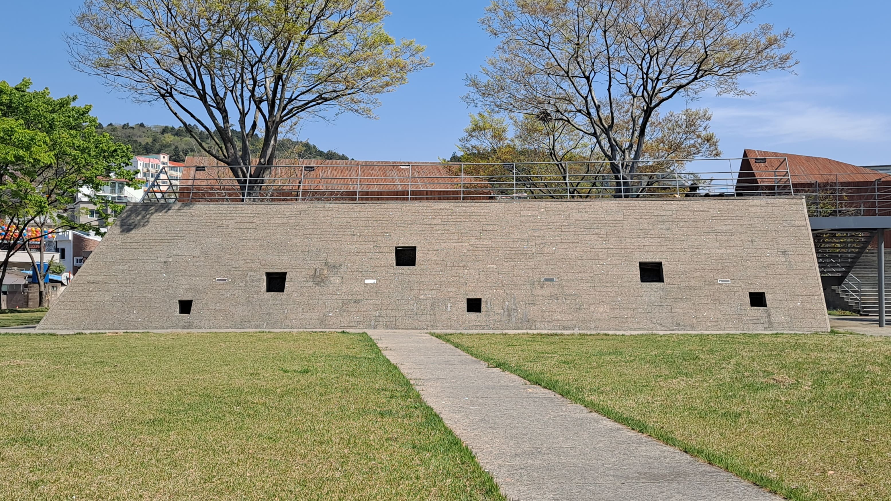통영 시민들의 휴식처, 윤이상기념공원.
정면에서 보면 사다리꼴 형태로 보인다. 독특하게도 반대편으로 걸어가면 시민들이 휴식을 취할 수 있는 넓은 공간이 있다.
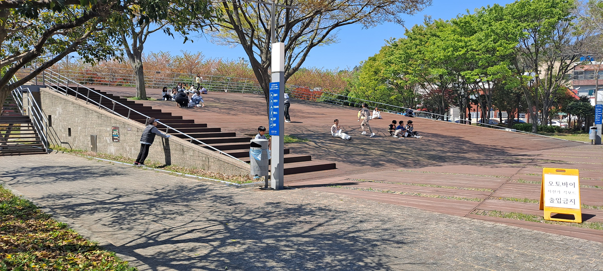공연장의 구도와 비슷하게 느껴진다. 음악과 관련 있는 장소인 만큼 그렇게 느껴졌다. 축제하는 날엔 이 구조물 앞에서 사람들이 공연을 하기도 한다. 그럴 때면 사람들이 점점 모이기 시작하고 각자 자리를 잡고 음악을 감상한다.
이 공원은 잣나무, 후박나무, 벚나무, 느티나무, 포구 나무 들이 만든 품에 전시관, 메모리 홀, 경사 광장, 베를린 하우스로 이루어진 기념관 건물들이 안겨 있다. 방문객들에게 많은 볼거리와 휴식처를 제공한다. 통영에서 살 때도 느낀 감상이지만, 이 공원은 윤이상 선생님을 떠올리게 하는 이미지의 디자인이다.
피아노 구조물
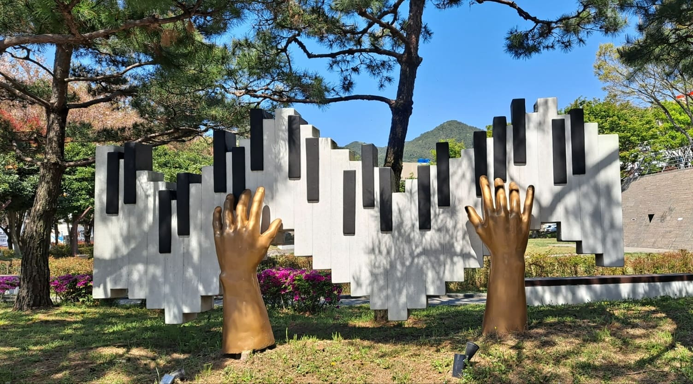윤이상 선생님이 다루셨던 악기들이 많은 것으로 알고 있다. 내가 알고 있는 악기는 첼로뿐이었다. 하지만 이 작품을 보고 윤이상 선생님께서 피아노 또한 사랑하셨다는 점을 알게 되었다. 부끄러운 일이지만 통영 사람들은 윤이상 선생님에 대해서 잘 모른다. 나도 마찬가지이다. 윤이상 선생님은 통영에 있는 학교들의 교과를 작곡하셨다. 내가 졸업한 초중고 교과 모두 윤이상 선생님의 이름이 적혀있었다. 조금만 생각해도 그가 통영을 얼마나 사랑하셨는지가 느껴진다.
음표 구조물
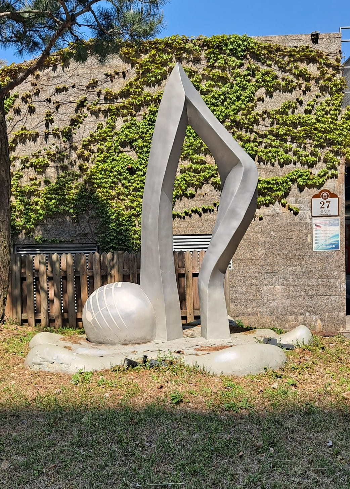이 공원을 설명해 주는 구조물이다. 음악을 떠올리게 하는 구조물 음표이다. 나의 바람이지만 윤이상 공원에 이런 작품들이 더욱 생겼으면 한다. 윤이상 공원을 산책하며 볼거리가 생긴다는 것은 방문객들이 윤이상 선생님을 조금 더 기억해 줄 것이다.
윤이상 음악상자
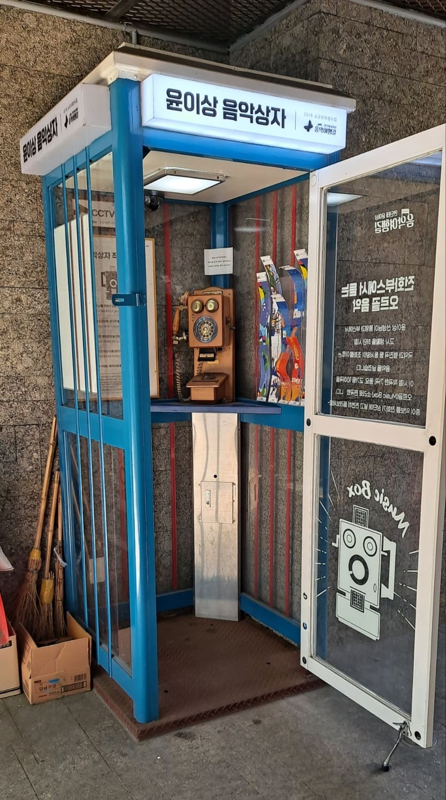겉보기엔 전화부스처럼 보인다. 하지만 정말로 전화를 걸 수 있는 것은 아니고 윤이상 선생님이 작곡했던 음악을 오르골로 감상할 수 있는 부스이다. 내 시선을 끌었던 건 부스 안의 고전적인 분위기의 전화기다.
전화기 옆에 악보들이 꽂혀 있다. 그 악보들을 전화기 상단 구멍에 넣으면 음악을 감상할수있다. 전화부스로 디자인하여 방문객들의 관심을 끌어서 그의 음악을 들을 수 있도록 하는 게 기발하다고 생각한다.
베를린하우스
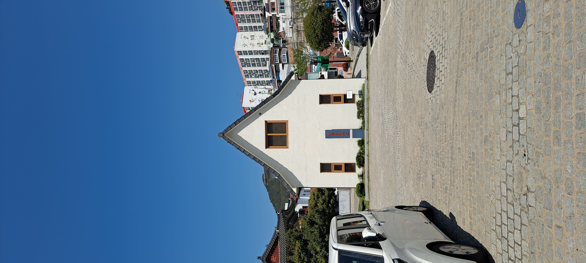윤이상 선생님은 유럽에서 39년 동안 생활하셨다. 이곳은 윤이상 선생님의 베를린 자택을 그대로 본떠 만든 건물이다. 이 건물 1층에는 음악 도서관이 들어와, 선생의 악보 전집, 기타 음악 관련 도서들을 열람할 수 있게 돼 있고, 2층은 선생의 서재와 응접실이 베를린에서 이송한 가구와 도서, 그림 등으로 재현되어 있다.
주변 주택들과는 분위기가 다른 모습에 계속 시선이 가는 건물이었다. 사실 난 중학생 때까진 이곳이 도서관인 줄 몰랐다.
대륙입시미술전문학원
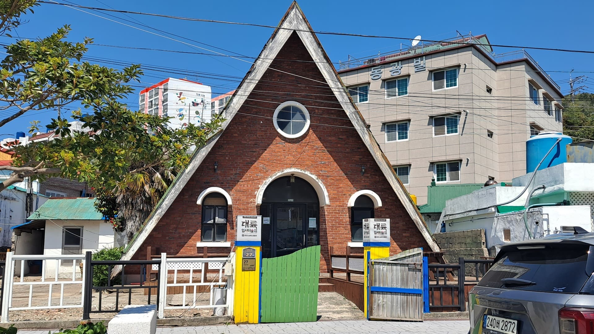내가 이곳으로 온 최종 목적인 건물이다. 바로 내가 고등학교 입시 시절 다녔던 학원이다. 건물 디자인이 독특해서 가끔 지나가는 관광객들이 카페나 도서관인 줄 알고 들어오는 사람들도 꽤 있었다.
사실이 건물은 일제의 영향을 받아 만들어진 건물로 알고 있다. 도천동에는 이런 건물들이 꽤 많다. 부모님께 들어 알게 되었는데 근대 건축물들이 지금까지 유지된 거라고 한다. 외관은 나름대로 교회 같고 카페 같았는데 학원 내부에는 허름한 곳이 많았다.
윤이상 책상
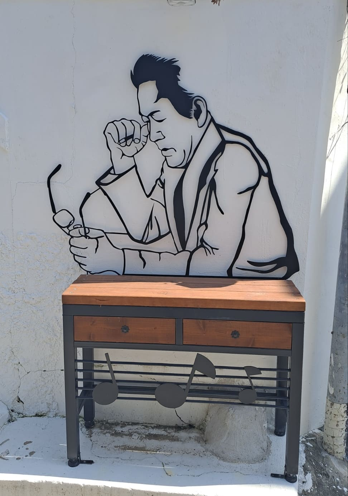이곳은 골목길이다. 버스정류장으로 향하는 길이었다. 골목길 구석구석에도 음악을 담은 벽화와 구조물들이 가득했다. 책상다리에 음표가 있는 게 디자인적으로 마음에 들었다. 책상 위에 윤이상 선생님의 모습이다. 왠지 책상에 기대어 생각하는 듯한 이미지가 보인다.
버스정류장
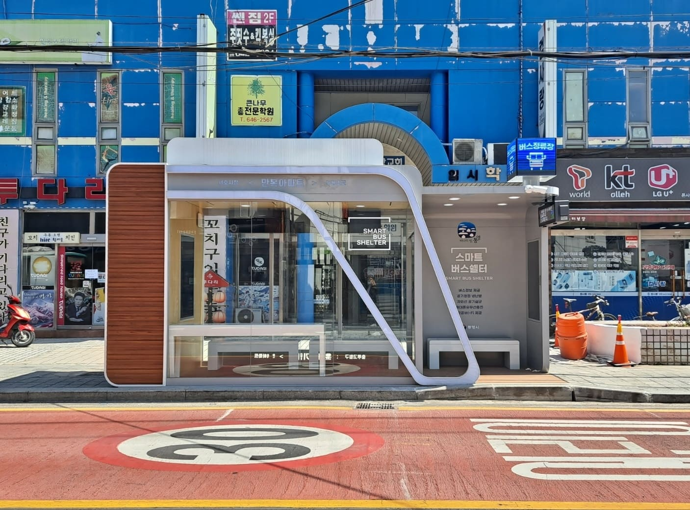이걸 찍을 당시 처음 알았는데 버스정류장을 이런 식으로 디자인한 건 통영밖에 없다고 친구가 알려주었다. 내부 의자와 외부 의자가 따로 있고, 내부 공간이 더 넓다. 내부엔 핸드폰을 충전할 수 있는 무선 충전기가 있다. 핸드폰을 올려두면 충전되는 시스템인데, 안타깝게도 내 핸드폰은 충전이 되지 않았다. 갤럭시는 안된다는 뜻이다. 외관도 깔끔하고 요즘 사회 사람들이 핸드폰을 많이 한다는 사실을 고려해 충전기를 설치한 점은 정말 좋다. 하지만 앉을 수 있는 공간이 전보다 더 좁아진 건 아쉽다. 그리고 갤럭시도 충전할 수 있도록 개선되었으면 좋겠다.
벽화
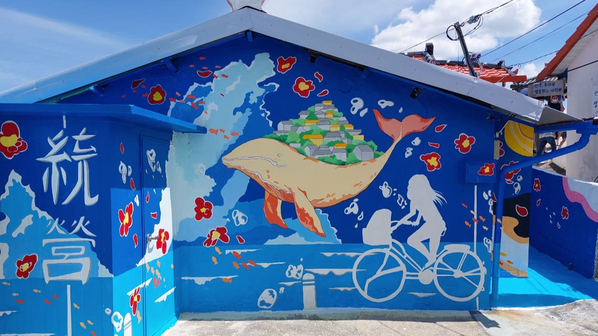동피랑이다. 통영 관광지 중 벽화로 유명한 곳이다. 많은 벽화 중 이 벽화를 꼽은 이유는 2022년도에 통영여자고등학교 학생들이 그린 작품이기 때문이다. 그리고 당시에 나 또한 이 벽화에 참여했다. 고래 위에 있는 동네가 동피랑을 의미하고 통영 하면 가장 떠오르는 바다를 배경으로 삼았다. 통영의 동백꽃을 주변에 그려 선명한 파란색 빨간색 조합이 전혁림 화백의 화풍을 연상시키기도 한다. 물론 도안을 내가 디자인한 건 아니다.
통영대교
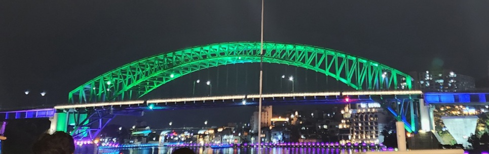마지막이다. 이곳은 통영대교이다. 하굣길에 늘 보던 곳이다. 진남초등학교 앞에 다리가 있는데 그곳에서 바라본 통영대교는 그야말로 정말 아름답다. 어느 계절이든, 어떤 날씨든, 어떤 시간대이든 언제봐도 이곳의 풍경은 정말 아름답다고 느낀다.
이곳에 좋은 사진기를 들고 와 오랫동안 통영대교를 찍는 사람들도 많이 보았다. 밤이 되면 조명들이 대교를 비추어 밝게 빛난다. 그 빛들이 바다에 비쳐 한층더 아름다워진다. 개인적으로 나는 계절은 봄이나 여름, 점심 시간대에 이곳에 와서 보는 통영대교를 좋아한다. 관광객들을 사로잡기 위한 화려한 관광지들보다도 이런 사소한 것에서 느끼는 미가 나에겐 소중하게 느껴진다.